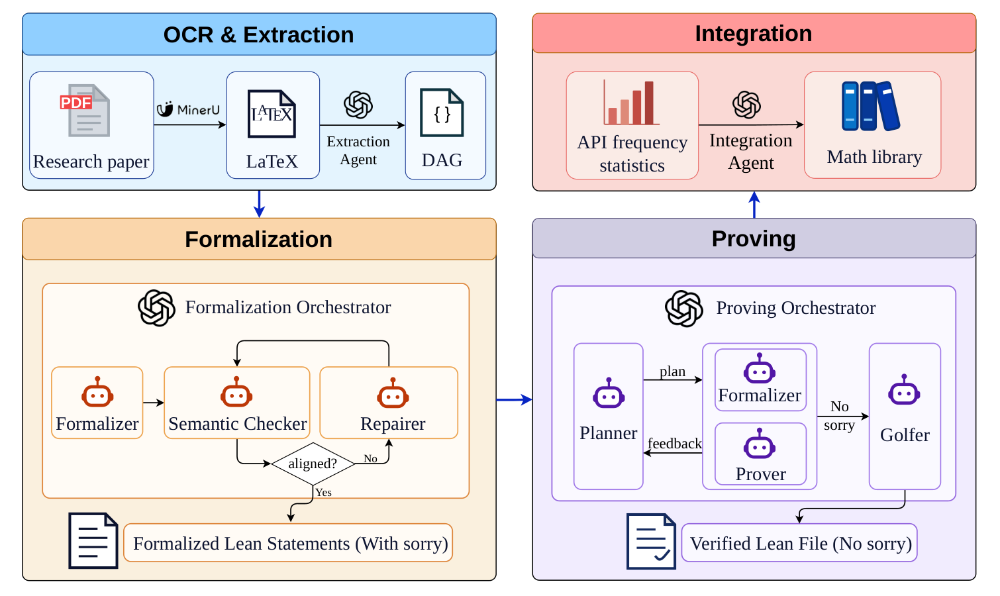

Agentic LLM framework converts optimization research papers into compiled Lean 4 projects built on Mathlib and a supporting Foundation library, released as the OptPaper-20 corpus.
Abstract
Formalizing a mathematical research paper requires more than translating isolated theorems: statements and proofs must remain semantically faithful to the source and globally consistent across long-range dependencies. We introduce Paper2Lean, an end-to-end agentic framework that converts mathematical research papers into integrated Lean projects. The framework extracts mathematical content into a dependency graph and coordinates specialized agents for statement formalization, semantic checking and repair, proof construction, and project integration. We evaluate Paper2Lean on 20 mathematical optimization research papers, using mathlib and a shared library of supporting results. All 20 automatically generated projects compile successfully without proof placeholders. Following human review and semantic repair, we introduce OptPaper-20, a corpus of 20 corrected paper-level formalizations comprising 494 Lean files and 110,910 lines of Lean code. All released projects pass clean builds, with no unresolved discrepancies identified in the audit. These results demonstrate the feasibility of agentic paper-level formalization while highlighting semantic fidelity as a central challenge beyond proof verification. The source code and dataset are publicly available at https://github.com/TTony2019/OptPaper
Problem
Formalizing a whole research paper is harder than translating isolated theorems. Statements must stay faithful to the source, and the project must remain consistent across long-range dependencies between results.
Approach
Paper2Lean uses MinerU OCR to extract a paper's mathematical units into JSON and arranges them in a dependency DAG. Specialized Codex-based agents then handle statement formalization, semantic checking and repair, layer-scheduled proof construction, and project integration. The agents interact with Lean 4 via Lean LSP MCP. Formalizations build on Mathlib plus a Foundation library partly derived from Bauschke & Combettes and from Optlib.

Figure 1: Overview of Paper2Lean .
Results
All 20 generated projects for optimization papers compile without sorry placeholders. Before manual correction, 473 of 494 reviewed declarations were judged faithful. After repair, the OptPaper-20 corpus was released with 494 Lean files and 110,910 lines of Lean. A comparison on three papers shows GPT-5.6-Terra and DeepSeek-V4.1-Flash reaching similar alignment and proof success, with different token costs.